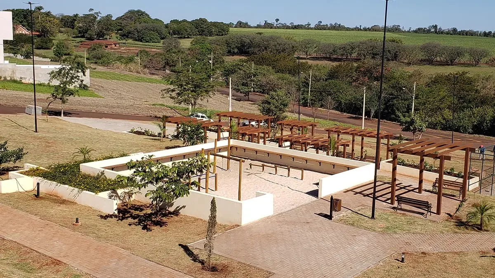
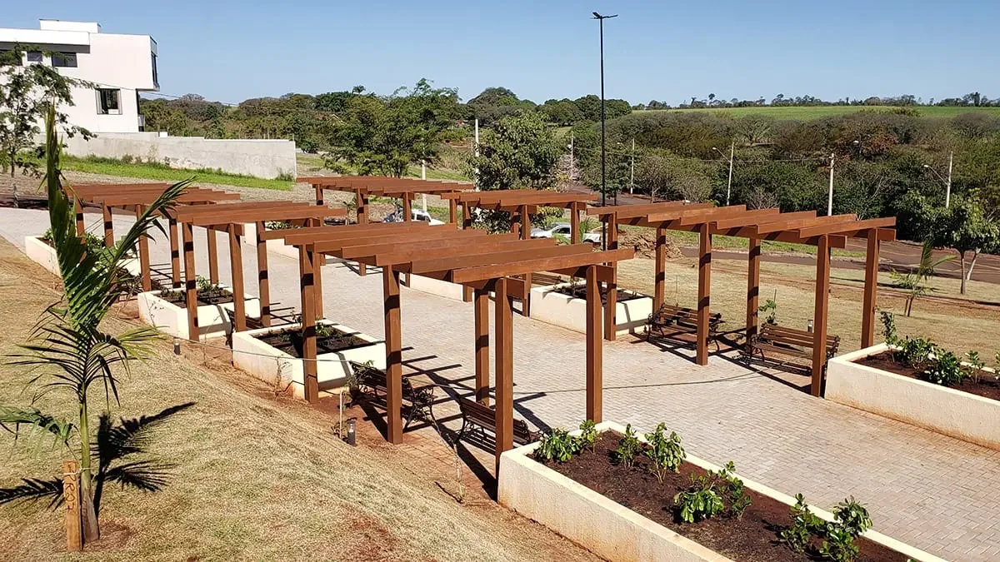

🔍 Ampliar
🔍 Ampliar
Fachada Frontal Completa
Arquitetura contemporânea de linhas retas com pé-direito imponente e jardim frontal.
Uma residência ampla e sofisticada dentro do Residencial Ville de France, com 430 m² de área construída em um terreno de 912 m². A casa ocupa dois terrenos unificados — uma das poucas propriedades do condomínio que contam com essa metragem e amplitude privativa.
Concebida para unir conforto privativo e convívio social memorável, esta propriedade ocupa dois terrenos unificados totalizando 912 m² — sendo uma das pouquíssimas casas de todo o Residencial Ville de France com esse privilégio de espaço e privacidade.
A arquitetura se destaca pela generosidade de suas proporções. Ao entrar, o pé-direito elevado e as amplas esquadrias de alumínio garantem excelente incidência de luz natural e ventilação cruzada constante, valorizando a fluidez entre a sala de estar, a sala de jantar e os espaços de convivência.
Com 430 m² de área construída, a residência oferece cinco dormitórios confortáveis — sendo quatro suítes completas —, incluindo uma suíte master elegante com closet planejado. Uma segunda sala de TV no mezanino superior assegura momentos tranquilos de descanso e privacidade para toda a família.

Explore os detalhes de acabamento, a amplitude dos ambientes e a harmonia entre as áreas internas e o quintal verdejante.
🔍 Ampliar
Arquitetura contemporânea de linhas retas com pé-direito imponente e jardim frontal.
🔍 Ampliar
Projeto luminotécnico valorizando os volumes arquitetônicos e o paisagismo.
 🔍 Ampliar
🔍 Ampliar
Gramado verdejante, palmeiras e entrada social imponente com vidros duplos.
 🔍 Ampliar
🔍 Ampliar
Área frontal com acabamento refinado e integração com a rua arborizada.
 🔍 Ampliar
🔍 Ampliar
Espaço coberto para 2 veículos e acesso direto sem desníveis.
 🔍 Ampliar
🔍 Ampliar
Amplo espaço entre vagas cobertas e descobertas com piso de alta durabilidade.
 🔍 Ampliar
🔍 Ampliar
Destaque para o lote duplo de 912 m² e sua iluminação perimetral segura.
 🔍 Ampliar
🔍 Ampliar
Conexão fluida com a área de estar e cozinha, piso em porcelanato polido.
 🔍 Ampliar
🔍 Ampliar
Ambiente claro, acolhedor e perfeitamente integrado para reunir família e convidados.
 🔍 Ampliar
🔍 Ampliar
Guarda-corpo panorâmico em vidro e degraus com acabamento refinado.
 🔍 Ampliar
🔍 Ampliar
Design minimalista e amplitude vertical conectando os dois pavimentos.
 🔍 Ampliar
🔍 Ampliar
Excelente entrada de luz natural e conforto térmico em todas as estações.
 🔍 Ampliar
🔍 Ampliar
Ambiente reservado para entretenimento e descanso no pavimento inferior.
 🔍 Ampliar
🔍 Ampliar
Ambiente privativo no andar superior para momentos em família com total tranquilidade.
 🔍 Ampliar
🔍 Ampliar
Sensação ímpar de amplitude visual do pé-direito duplo sobre a varanda gourmet.
 🔍 Ampliar
🔍 Ampliar
Bancada em granito escuro, marcenaria planejada e pé-direito elevado.
 🔍 Ampliar
🔍 Ampliar
Grelha inox, coifa eficiente e revestimento geométrico 3D de alta sofisticação.
 🔍 Ampliar
🔍 Ampliar
Espaço funcional pensado para o preparo de refeições especiais com amigos.
 🔍 Ampliar
🔍 Ampliar
Móveis sob medida, amplas bancadas de trabalho e torre quente funcional.
 🔍 Ampliar
🔍 Ampliar
Armários superiores com nichos e acabamento resistente de fácil manutenção.
 🔍 Ampliar
🔍 Ampliar
Visão aberta facilitando a comunicação com a copa e salas.
 🔍 Ampliar
🔍 Ampliar
Praticidade e conforto para o café da manhã e almoços cotidianos.
 🔍 Ampliar
🔍 Ampliar
Iluminação dedicada e ventilação natural com esquadrias de alumínio.
 🔍 Ampliar
🔍 Ampliar
Espaço generoso, closet privativo e portas balcão com persiana integrada.
 🔍 Ampliar
🔍 Ampliar
Conforto acústico, climatização preparada e privacidade absoluta.
 🔍 Ampliar
🔍 Ampliar
Revestimentos em porcelanato de grande formato e box blindex de qualidade.
 🔍 Ampliar
🔍 Ampliar
Mármore nobre com cuba esculpida e metais sanitários de alto padrão.
 🔍 Ampliar
🔍 Ampliar
Quarto amplo com espaço para bancada de estudos e iluminação embutida.
 🔍 Ampliar
🔍 Ampliar
Acesso privativo ao banheiro e vista aberta para a tranquilidade do condomínio.
 🔍 Ampliar
🔍 Ampliar
Bancada em mármore travertino, espelho amplo e box com acabamento fosco.
 🔍 Ampliar
🔍 Ampliar
Excelente incidência de luz natural e armários bem posicionados.
 🔍 Ampliar
🔍 Ampliar
Ambiente flexível para dormitório de hóspedes, home office ou biblioteca.
 🔍 Ampliar
🔍 Ampliar
Quarta suíte posicionada no piso térreo, ideal para visitantes ou acessibilidade.
 🔍 Ampliar
🔍 Ampliar
Acesso direto, ventilação natural e acabamento contemporâneo.
 🔍 Ampliar
🔍 Ampliar
Área verde exuberante no lote duplo de 912 m² com espaço para diversos projetos.
 🔍 Ampliar
🔍 Ampliar
Terraço do andar de cima com vista ampla para o quintal privativo e horizonte.
 🔍 Ampliar
🔍 Ampliar
Piso cerâmico que remete à madeira e mureta com acabamento em granito.
 🔍 Ampliar
🔍 Ampliar
Paisagismo natural consolidado proporcionando sombra, ar puro e privacidade.
 🔍 Ampliar
🔍 Ampliar
Terreno duplo de 912 m² unificado com segurança entre muros altos.
 🔍 Ampliar
🔍 Ampliar
Varanda fechada em blindex com ligação direta para o gramado.
 🔍 Ampliar
🔍 Ampliar
Permite desfrutar do espaço gourmet em dias de chuva ou vento com todo o conforto.
 🔍 Ampliar
🔍 Ampliar
Estrutura dedicada para animais de estimação com segurança e higienização fácil.
 🔍 Ampliar
🔍 Ampliar
Acesso lateral independente conectando frente e fundos sem passar pela casa.
O projeto social foi concebido para proporcionar integração harmônica e amplitude visual. A sala de estar frontal recebe convidados com nobreza e conecta-se suavemente à sala de jantar e à copa.
Para oferecer máxima versatilidade à rotina familiar, o imóvel conta com duas salas de TV distintas: um ambiente prático e aconchegante no pavimento térreo e uma segunda sala no mezanino do piso superior, com pé-direito elevado e privacidade acústica.
A residência oferece uma estrutura gastronômica completa com duas cozinhas integradas. A cozinha principal conta com armários planejados sob medida, bancadas generosas em granito escuro e conexão direta com a despensa e a lavanderia.
Ao lado, a varanda gourmet é um verdadeiro destaque: possui pé-direito elevado com vista para o mezanino, churrasqueira revestida com detalhes em relevo geométrico, bancada com ilha de apoio e fechamento em vidro que permite utilização confortável em todas as estações do ano, com vista livre para o quintal.
O setor privativo foi projetado priorizando o silêncio e o bem-estar dos moradores. Ao todo são cinco dormitórios, sendo quatro suítes confortáveis que atendem perfeitamente a famílias com filhos e hóspedes.
A suíte master possui generosas dimensões, iluminação natural privilegiada, persiana automatizada e um closet reservado. O banheiro da suíte master é revestido com materiais nobres, contando com bancada esculpida e metais de primeira linha. Além disso, uma das quatro suítes fica situada no piso térreo, proporcionando facilidade de acesso sem necessidade de subir escadas.
Um dos maiores privilégios desta residência é o seu terreno de 912 m² — resultado da junção de dois lotes —, sendo uma das poucas casas do condomínio que ocupam 2 terrenos. Isso proporciona uma área externa espaçosa, ensolarada e privativa que é uma raridade no Residencial Ville de France.
O quintal conta com gramado verde, coqueiros, árvores ornamentais, caminhos em alvenaria e canil planejado para pets. A varanda do piso superior oferece vista panorâmica desobstruída para os fundos do terreno e para a natureza do condomínio.
Todos os números e características estruturais reunidos para facilitar sua análise técnica.
Resumo Técnico Oficial: Esta residência de alto padrão à venda em Ourinhos é definida como um imóvel residencial de dois pavimentos com 430 m² de área construída sobre 2 terrenos unificados totalizando 912 m² dentro do prestigiado Residencial Ville de France. A propriedade conta com 5 dormitórios (4 suítes), 6 banheiros, garagem para até 5 veículos, ampla varanda gourmet fechada com vidro, churrasqueira integrada, pé-direito duplo na área social e segurança com portaria 24 horas.
Dados objetivos e verificáveis para análise comparativa e avaliação imobiliária em Ourinhos - SP.
| Característica | Especificação Oficial | Diferencial para o Comprador |
|---|---|---|
| Localização | Residencial Ville de France, Ourinhos - SP | Condomínio fechado horizontal seguro com portaria 24 horas |
| Preço de Venda | R$ 2.600.000,00 | Excelente relação de valor por metro construído e área de terreno |
| Área do Terreno | 912 m² privativos | Ocupa 2 terrenos unificados (uma das poucas casas do condomínio) |
| Área Construída | 430 m² | Dois pavimentos amplos com circulação fluida e excelente insolação |
| Dormitórios & Suítes | 5 dormitórios (4 suítes) | Suíte master com closet privativo e persiana automatizada |
| Banheiros | 6 banheiros no total | Lavabo social térreo, suítes privativas e banheiro externo no quintal |
| Vagas de Garagem | Até 5 veículos | 2 vagas cobertas e aproximadamente 3 vagas descobertas |
| Área Social | Pé-direito duplo integrado | Sala de estar monumental, sala de jantar e 2 salas de TV |
| Gourmet & Cozinha | Varanda gourmet com vidro | Churrasqueira com ilha, cozinha planejada e 2ª cozinha de apoio |
| Área Externa Privativa | Jardim amplo e canil | Grande quintal gramado nos 2 lotes com coqueiros e espaço pet |
| Lazer do Condomínio | Infraestrutura completa | Quadra de tênis, poliesportiva, academia, playground e bosques |
| Agendamento de Visita | Atendimento exclusivo | WhatsApp oficial: +55 (14) 99852-1062 com o Danilo |
Segurança 24 horas, contato com a natureza e infraestrutura esportiva de alto nível para sua família desfrutar o melhor de Ourinhos.

Controle rigoroso de acesso e monitoramento contínuo para total privacidade e segurança.
Quadra de tênis com iluminação e piso oficial para partidas a qualquer hora do dia.
Espaço completo para futebol de salão, basquetebol e recreação esportiva.
Espaço fitness moderno para manter os treinos em dia sem precisar sair do condomínio.
Área de lazer ao ar livre dedicada para crianças brincarem com liberdade e segurança.
Estações de exercícios e alongamento integradas à vegetação nativa preservada.
Espaços com pergolados de madeira rodeados de jardins floridos para contemplação e leitura.
Alamedas arborizadas que garantem clima agradável e contato constante com a natureza.

Piso oficial com iluminação para a prática esportiva

Espaço completo para futebol de salão e basquete

Área verde com brinquedos seguros para crianças

Estações integradas à vegetação nativa preservada

Espaços arborizados de contemplação e leitura

Natureza, paz e tranquilidade em Ourinhos - SP
Localizada dentro do Residencial Ville de France.
O Residencial Ville de France é sinônimo de prestígio e tranquilidade em Ourinhos, combinando ruas planejadas, ambiente residencial acolhedor e infraestrutura de ponta. A propriedade usufrui de uma posição privilegiada dentro do condomínio, garantindo discrição, ar puro e silêncio.
Ourinhos no Sudoeste Paulista: Município polo de desenvolvimento, saúde e educação de referência no interior paulista, com fácil conexão rodoviária pela Raposo Tavares (SP-270) e BR-153. Uma cidade que entrega qualidade de vida incomparável para famílias que valorizam segurança e tranquilidade.
Conheça a residência pessoalmente e comprove a qualidade de vida do Ville de France.
Solicitar localização e agendar visitaInformações claras e diretas sobre a aquisição e características deste imóvel em Ourinhos.
O valor anunciado do imóvel é de R$ 2.600.000,00.
O imóvel possui 912 m² de terreno privativo, resultado da junção de dois terrenos — sendo uma das poucas casas do condomínio que ocupam 2 lotes.
A área construída total é de 430 m² distribuídos em dois pavimentos projetados com fluidez e amplitude.
São cinco dormitórios, sendo quatro suítes no total — incluindo uma suíte master com closet privativo.
Acomoda até 5 veículos, sendo 2 vagas cobertas e espaço descoberto para aproximadamente mais 3 veículos.
Sim. A residência está localizada no Residencial Ville de France, em Ourinhos - SP, com portaria 24 horas e controle de acesso.
Sim. O condomínio oferece academia equipada, quadra de tênis, quadra poliesportiva, quadra de basquete, playground infantil, estações de ginástica ao ar livre e amplas áreas arborizadas com pergolados.
Porque é uma das raras residências do Residencial Ville de France edificadas em dois terrenos unificados (912 m²), oferecendo 430 m² de construção com acabamentos refinados, 5 dormitórios (4 suítes), ampla área gourmet envidraçada e segurança ininterrupta em um condomínio fechado de altíssimo padrão em Ourinhos - SP.
A visita deve ser agendada previamente pelo WhatsApp através do número +55 14 998521062, garantindo atendimento reservado e acompanhamento personalizado com o Danilo.
Entre em contato direto pelo WhatsApp para esclarecer dúvidas detalhadas e reservar o melhor horário para uma visita privativa com discrição.
WhatsApp Oficial: +55 (14) 99852-1062 • Atendimento direto e personalizado com o Danilo